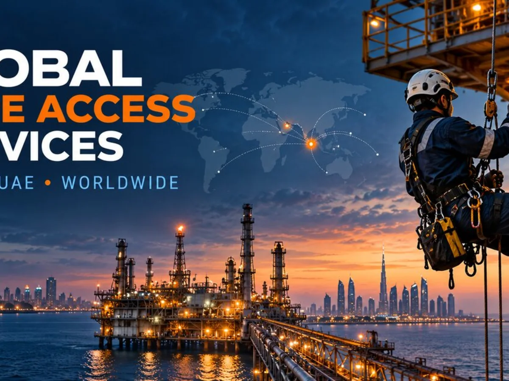
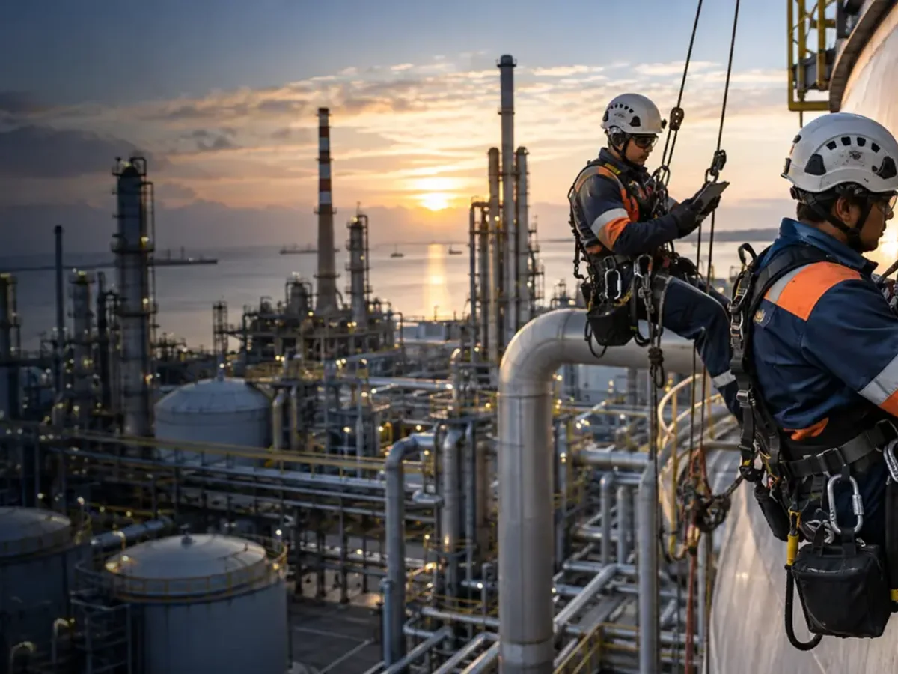

Upstream, Midstream & Gas Facilities
Inspection and maintenance of elevated process and structural assets.
- Flare systems
- Pipe racks
- Process vessels
- Structural steel
IAIS India and IAIS UAE adapt rope access inspection and maintenance teams to the operating risks, technical requirements and documentation standards of each industry.
Discuss Your Requirement →

The same rope-access platform can support refinery corrosion surveys, offshore NDT, wind-turbine inspection or façade maintenance.
We match technical competence, equipment, access, permits, rescue arrangements and reporting to the client’s operating environment.
Inspection and maintenance of elevated process and structural assets.
Support during operation, shutdown and turnaround.
Inspection and maintenance of conventional generation assets.
Deployable teams for complex marine logistics.
External inspection and maintenance for wind assets.
Work where conventional access disrupts production.
Condition surveys and local maintenance of complex structures.
Support for loading, storage and high-level facilities.
Rope access and technical qualifications matched to scope.
Anchors, rope paths, exclusion zones and rescue based on site.
Work method and acceptance requirements aligned before execution.
Locations, findings, photographs and limitations recorded.
Share drawings, quantities, operating conditions, schedule and certification requirements.